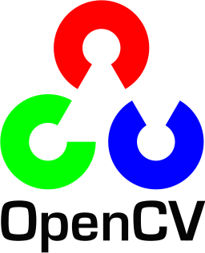

Case study · Cabify Spain · Jan to Jun 2026
Hybrid ML + LLM Vision Engine
The first LLM version of the fleet audit asked the model everything: which side of the car it was looking at, which design, which plate, and then the hard questions about condition. Most of those calls were for things a small model can answer almost for free. So I split the work by its nature and trained my own models for the repetitive half.

OpenCVYOLOv8 · UltralyticsSplit the work by its nature
The rule is simple: what is deterministic and repetitive runs on a local model and costs nothing in tokens; what is subjective or comparative goes to the LLM, where it is worth paying for.
| Check | Engine | Why |
|---|---|---|
| Side of the vehicle | Local CNN | A fixed visual pattern with plenty of examples; nothing to reason about |
| Design on the vinyl | Local CNN | A closed classification, cheap to repeat thousands of times |
| Plate | Local OCR | Pure OCR plus a format rule |
| Condition against the reference | LLM | Needs to compare the real photo with the reference design |
| Dirt and damage | LLM | Subjective perception, and the answer has to be described in words |
What the models return
Each local model is a classifier: for a photo it returns a probability for every class it knows, and the highest one wins only if it is clear enough. Two invented examples of what that looks like:
The models
- Two classifiers in cascade, not one. The first decides the side of the car; the second classifies the design on side photos. Each is a small pretrained CNN fine-tuned on my own labelled photos, which trains well on a free Colab GPU.
- Plates are read with an off-the-shelf OCR and checked against the plate format. Nothing to train.
- Data. Thousands of photos, labelled almost for free because the capture form already records which side each photo shows. Augmentation never flips images horizontally, so logos and text are never mirrored.
- Confidence gate. Rare designs have few examples, so when the design model is not sure enough, the photo goes to the LLM instead of guessing.
- A new design only means retraining the design model once there are enough photos of it; the rest stays as it is.
Version 1: from scratch
Before the cascade I built everything from zero: a CNN trained from scratch, YOLOv8 to find the car, OCR for plates and a feature-matching step that aligned each photo to its reference design to estimate coverage. It ran over real submissions, but it confused similar designs and I did not keep a proper evaluation, so there was no number to defend. A vision LLM replaced it, and the hybrid cascade later brought the small models back where they are strong.
What I learned
- An LLM is a great generalist and an expensive one. Knowing which questions do not need it is most of the saving.
- Keep the evaluation from the first day. The first models may well have been good; I just could not prove it.
No real photos are shown: the cars on this page are drawings and the values are invented.